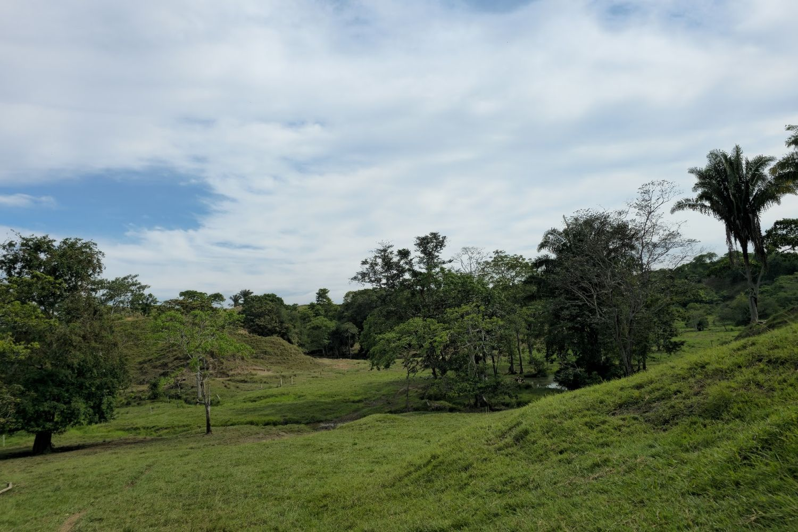
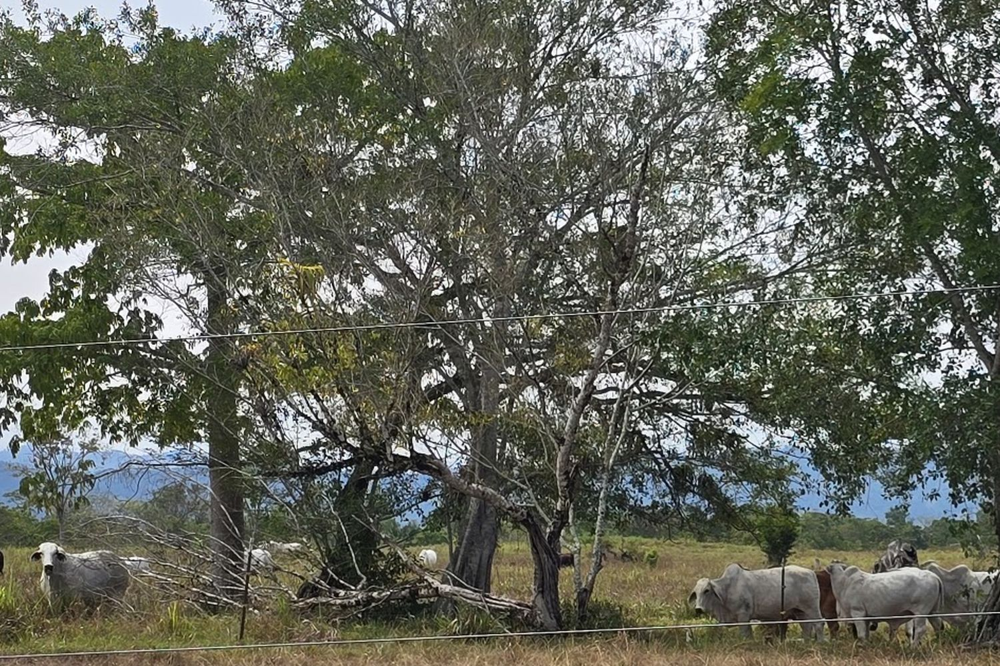
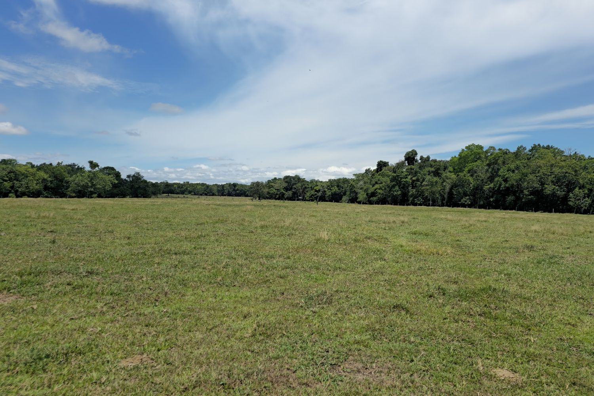

Looking for a property with other characteristics?
Tell us on WhatsApp what you are looking for, and we will show you the ones that fit.

Portfolio · Colombia
Each ranch has its own page with area, pastures, water, housing, infrastructure, access, and price. Tap the one that interests you, and we will arrange the visit on WhatsApp.
Cattle ranch brokerage · Magdalena Medio · 1,570 ha in portfolio
Portfolio

In active cattle production. Angleton grass and Brachiaria grass, two creeks, and water reservoirs. Main house, manager's house, and three workers' quarters; renovated corrals and a covered livestock scale.

Flat, with 1.3 km of frontage on the Ruta del Sol and 110 paddocks. Brachiaria grass, Angleton grass, Mombasa grass, Braquipará grass, and Invasor grass. Main house and two workers' quarters; large new corral and machinery.

Flat land with Carare River flats, on the main road to Bucaramanga. Suitable for cow-calf, backgrounding and finishing, and for agriculture. Main house and manager's house; covered corral and livestock scale.
| Ranch | Area | Price per ha | Topography | Water | To Bogotá |
|---|---|---|---|---|---|
| Puerto Boyacá | 510 ha | COP 30 million | The entire ranch is tillable | Two creeks run through the ranch | 4 h 30 min |
| Puerto Salgar | 560.16 ha | COP 42.9 million | Flat throughout the ranch | Streams, canals, and a water reservoir | 3 h 40 min |
| Cimitarra | 500 ha | COP 30 million | Flat throughout the ranch | Carare River flats and good year-round water sources | 6 h 2 min |
Reference drive times to Bogotá from the town center of each municipality.
Prices per hectare, in millions of Colombian pesos (COP).
The region
Cattle country on the Ruta del Sol. For reference, from the town center of each municipality, Bogotá is between 3 h 40 min and 6 h 2 min away by road, and Medellín between 3 h 54 min and 4 h 54 min.
Puerto Boyacá holds a weekly cattle auction, licensed by the ICA. Puerto Salgar has its own cattle auction, and La Dorada lies across the bridge over the Magdalena River. Cimitarra has a cattle auction every week.
A day at the ranch with a Hierro & Tierra advisor: paddocks, water, housing, and infrastructure. Arranged on WhatsApp.
After the visit, your attorney reviews the certificate of title and the ranch's documentation.
Purchase agreement signed with the owner, followed by the deed.
In Colombian pesos (COP), per hectare.
Yes. Each ranch has a PDF listing you can download from its page.
Buyers and owners
We handle ranches for private sale that are not publicly listed: they are offered first to those who have already told us what they are looking for. And if you have a ranch to sell, we handle it privately.
Tell us on WhatsApp what you are looking for, and we will show you the ones that fit.
We will message you on WhatsApp when a new property is added to the portfolio. No advertising and no third-party messages.
Private sale: the location and your name are not published, visits take place only with your approval, and we support you through to the deed. We are looking for cattle ranches and estates in Colombia, preferably 300 hectares or more.
I want to sell my ranchContact
Message us on WhatsApp, tell us which ranch interests you, and we will arrange the visit.
+57 300 490 3639 · A Hierro & Tierra advisor will assist you.
We walk the entire ranch: paddocks, water, housing, and infrastructure. One day, no obligation.
Your attorney reviews the certificate of title and the ranch's documentation.
Purchase agreement signed with the owner, and the deed.